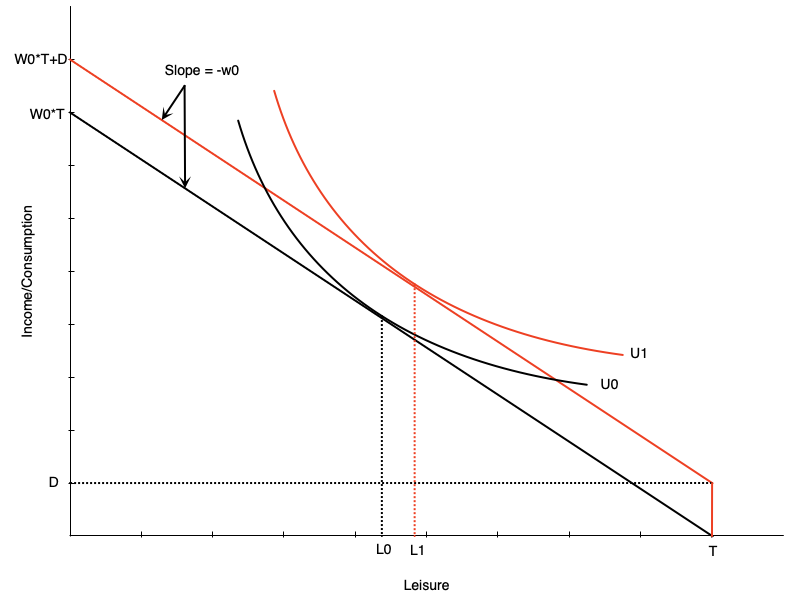
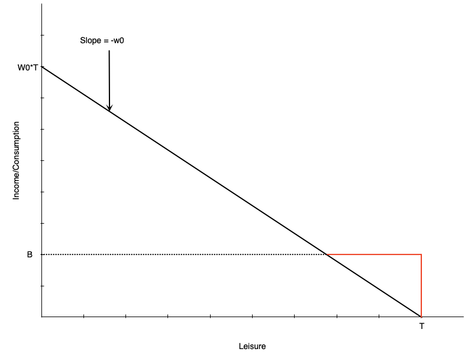
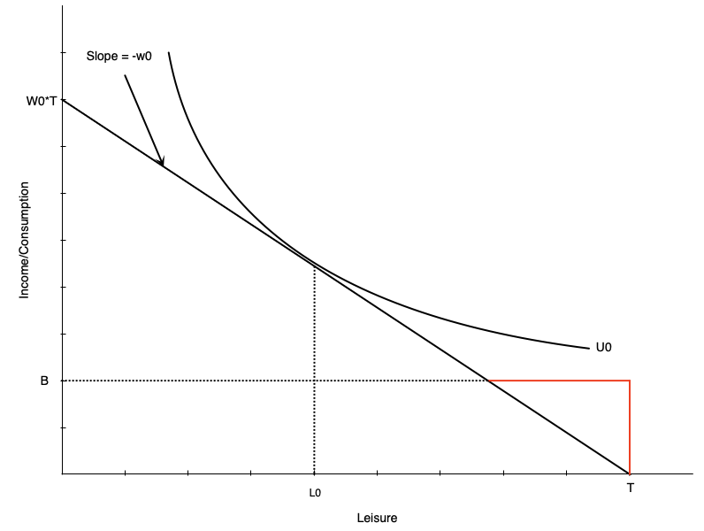
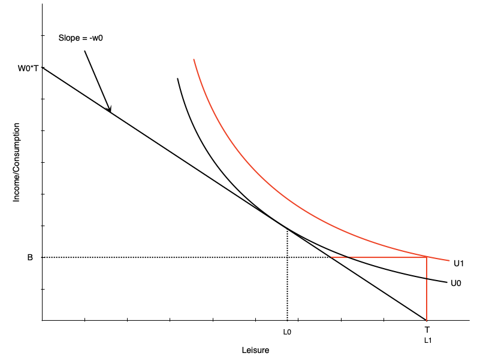

Labour Supply 2: Labour Supply and Public Policy
EC306- Wages and Employment
Justin Smith
Wilfrid Laurier University
Fall 2025

Goals of This Section
Goals of This Section
Discuss various public policies that affect labour supply
Taxes/subsidies
Transfers
Employment Insurance
Worker Compensation
Show effect of these policies on work decisions
Examine statistical evidence for the model predictions
Income Maintenance Programs
Overview of Income Maintenance Programs
Represent about 10% of GDP in Canada
Aim to
- Raise income of specific groups of people (e.g. parents, elderly)
- Supplement low wages
Include child benefits, employment insurance, social assistance, pensions
Key challenge is balancing income support with work incentives
Government Transfers in Canada
- In 2017, 83% of families received some form of government transfer
- Major programs:
- Federal Child Benefits (20.2%) – avg. $6,314
- Employment Insurance (14.0%) – avg. $8,352
- Social Assistance (11.3%) – avg. $8,367
- Old Age Security (25.1%) – avg. $8,566
- Canada/Quebec Pension Plan (32.4%) – avg. $10,092
- Federal Child Benefits (20.2%) – avg. $6,314
Issues in Program Design
Universal vs. Targeted Programs
- Universal programs easy to implement, but expensive and flows to people not in need
- Targeted programs benefit only those in need, but can be costly to implement
Work Disincentives
- Some programs that support income reduce the incentive to work
- Example: a welfare benefit that increases non-work income
- Can encourage people with preference for leisure to drop out of labour force
Permanent vs. transitory income loss
- Need different design for each situation
- Temporary layoff requires short-term support
- Long-term disability requires longer support and potentially more costs to reintegrate into workforce
Demogrants, Welfare, Wage Subsidies
Introduction
We first examine standard income support programs
Demogrants
- A fixed payment to all individuals regardless of income or employment status
Welfare
- Lump-sum payment for non-workers, reduced dollar for dollar with earned income
Negative Income Tax (NIT)
- A welfare payment that decreases at a lower rate than dollar for dollar with earned income
Wage Subsidies
- An addition to the wage rate
Demogrant

Demogrant is an unconditional lump sum income transfer
Shifts the budget line up by the amount \(D\)
Because wage does not change, this is a pure income effect
If leisure is a normal good, optimal leisure falls
Unambiguously negative work incentive effects
Leads to lower work hours
Can also lead to non-participation
Demogrant
Universal Child Care Benefit (UCCB) is a Canadian policy similar to a demogrant
Paid to families with children under 18
$160/month for each child under 6
$60/month for each child aged 6-17
Canada Child Benefit (CCB) replaced UCCB, Canada Child Tax Benefit (CCTB) and National Child Benefit Supplement (NCBS) in 2016
- More targeted to low and middle income families
Research (Schirle, 2015) shows that UCCB reduced labour supply of women with children under 6
- By about 3.2 percentage points for low-educated married women
Welfare
Welfare is a lump-sum payment to non-workers that is reduced dollar for dollar with earned income
- People do not really use the term welfare in Canada
- Usually called social assistance or income assistance
These programs have been criticized historically for negative work incentives
- Creates incentives for some not to work
- Important to balance this against the need to provide income support
Welfare

Budget line is initially the black line
- Leisure optimized at \(L_{0}\) hours
With welfare benefit is initially red line, then black line after they intersect
Welfare benefit \(B\) at zero hours of work
Benefit reduced by one dollar for each one dollar earned
- Like a 100% tax on earned income
Income stays constant at welfare benefit until earned income exactly equals benefit
After that, person earns wage \(w_{0}\) for each hour worked
Welfare

For some people welfare has no effect on work hours
In this graph, person is working \(H_{0}\) hours prior to benefit
After benefit, still maximize utility at \(H_{0}\) hours
Happens generally with people already working many hours
Welfare

- Others may face work disincentive
- A person like the left graph would choose to work zero hours after the welfare benefit
- Would happen because
- Welfare benefit is generous
- Individual puts high value on leisure
- This is not an ideal effect of welfare programs
Welfare
How to combat work disincentive?
Reduce benefit level
- But may not provide enough income support
Increase wages
Through minimum wages, subsidies, job training, unions
Can be expensive, which might reduce labour demand
Change preferences
Alter personal feelings towards work/leisure
Hard to do
Negative income tax
- Reduce the tax back rate of extra earnings
- Discussed in detail in a few slides
Welfare
Some evidence comes from a policy change in Quebec
Until 1989 welfare benefits for singles or couples with no kids was based on age
- Under 30: $185/month
- 30 and over: $507/month
Turning 30 is associated with a big jump in welfare benefits
Compared to 29 year olds, 30 year olds were
- Spending much longer on welfare
- Less likely to be employed